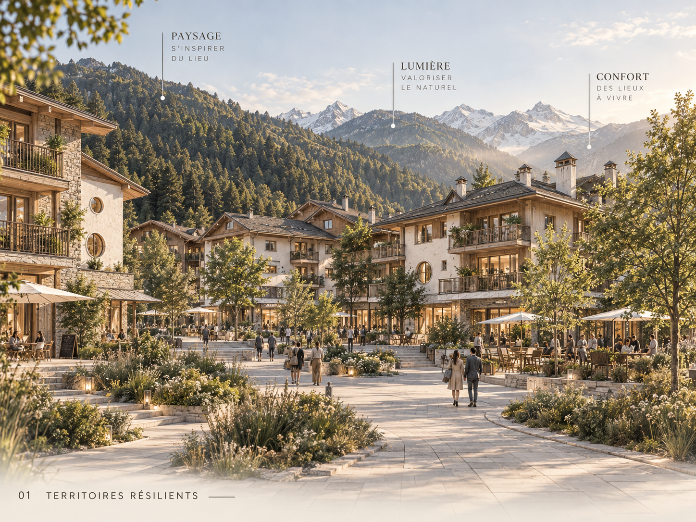
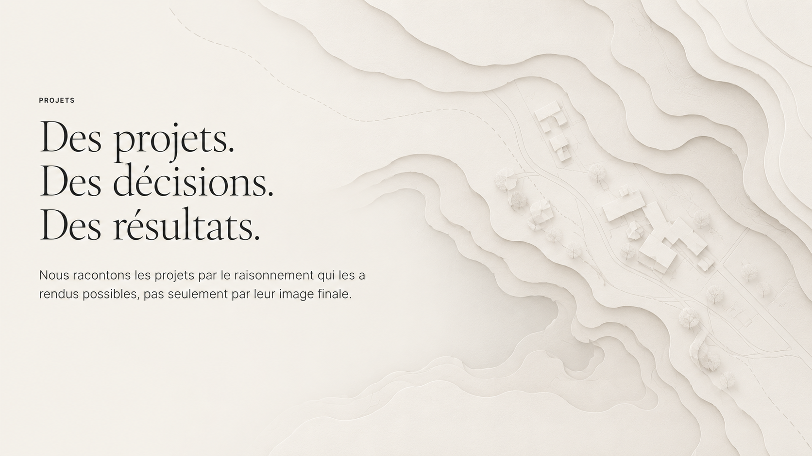
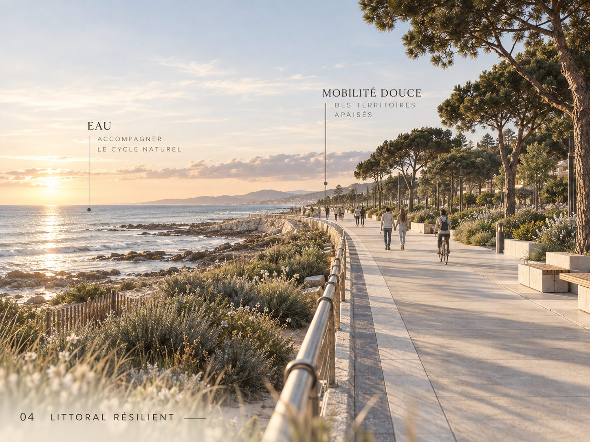
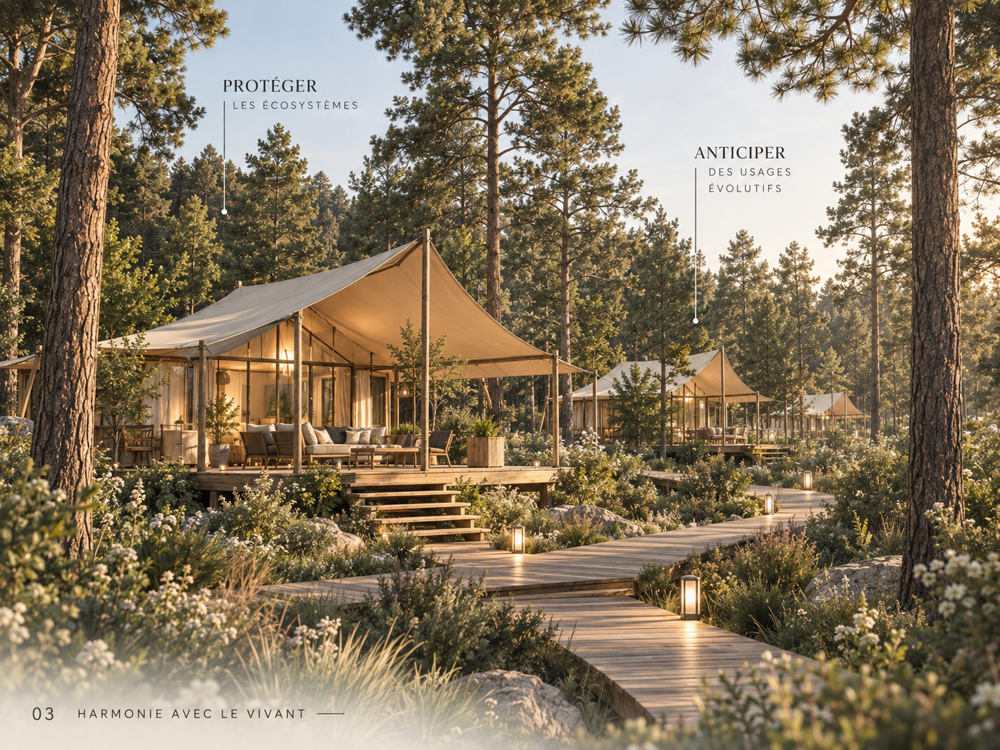
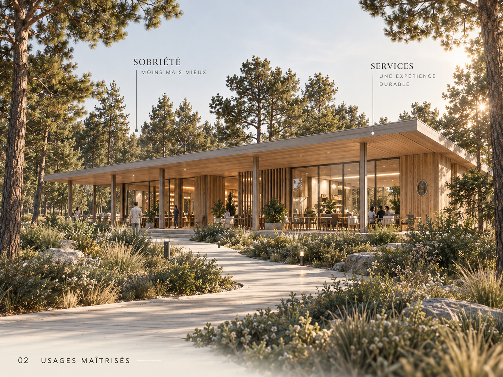

TOURISME & LOISIRS

PROJETS
Nous racontons les projets par le raisonnement qui les a rendus possibles, pas seulement par leur image finale.

TOURISME & LOISIRS

TERRITOIRES

HOSPITALITÉ

ÉQUIPEMENTS PUBLICS
PREMIÈRE ÉTAPE
Présentez-nous votre territoire, votre bâtiment ou votre problématique.